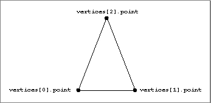

Triangles
A triangle is a closed plane figure defined by the three edges that connect three vertices. The entire triangle can have a set of attributes, and any or all of the three vertices can also have a set of attributes. A triangle is defined by theTQ3TriangleDatadata type. See "Creating and Editing Triangles," beginning on page 4-76 for a description of the routines you can use to create and edit triangles. Figure 4-12 shows a triangle.
typedef struct TQ3TriangleData { TQ3Vertex3D vertices[3]; TQ3AttributeSet triangleAttributeSet; } TQ3TriangleData;
Field Description
vertices- The three vertices that define the three sides of the triangle.
triangleAttributeSet- A set of attributes for the triangle. The value in this field is
NULLif no triangle attributes are defined.